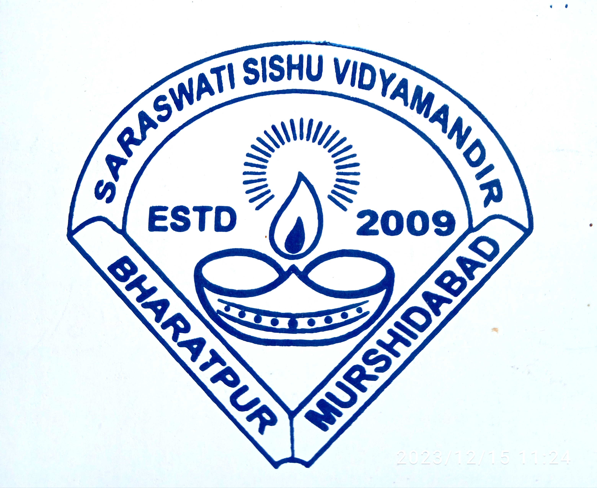

Primary Education
I began my academic journey at Saraswati Sishu Vidya Mandir in Bharatpur . During these early years, I built a strong foundation in basic literacy, numeracy, and curiosity-driven learning basic literacy, numeracy, and curiosity-driven learning. My teachers encouraged me to explore, ask questions, and engage creatively, instilling a lifelong love for learning and shaping my confidence and discipline.
Secondary Education
In 2018, I transitioned to Bharatpur Alia High School to continue my studies.The same year, I was honored to receive the National Scholarship, a milestone that motivated me to pursue academics with even greater dedication. I completed my secondary education under the West Bengal Board of Secondary Education, successfully passing the Madhyamik Examination with an impressive 93% marks . These years not only strengthened my knowledge in core subjects but also helped me grow holistically through extracurricular activities, problem-solving tasks, and leadership experiences, laying a strong foundation for my higher secondary education.

Higher Secondary (Science)
I completed my Higher Secondary Education from Bharatpur Alia High School under the West Bengal Council of Higher Secondary Education in the Pure Science stream. My core subjects included Physics, Chemistry, Mathematics, and Biology, alongside mandatory languages Bengali and English. During this period, I deepened my understanding of scientific concepts, strengthened my analytical and problem-solving skills, and prepared myself rigorously for entrance examinations. These years were crucial in shaping my academic focus and laying the groundwork for my future in engineering and technology.
Entrance Exams
After completing my Higher Secondary studies in the Pure Science stream, I appeared for multiple entrance examinations to pursue my career goals. I successfully cracked theWest Bengal Joint Entrance Examination (WBJEE) and also qualified for the National Eligibility cum Entrance Test (NEET). Preparing for these competitive exams not only enhanced my knowledge of Physics, Chemistry, and Biology, but also strengthened my time management, problem-solving skills, and exam temperament. These achievements opened the path for my journey into the field of engineering and technology.
College
I got admission into the Murshidabad College of Engineering & Technology (MCET) under MAKAUT University through the official counseling process after WBJEE. I chose MCET as it was the nearest engineering college to my home, allowing me to balance both my studies and personal responsibilities effectively. Currently, I am pursuing my B.Tech in Computer Science & Engineering, where I am building my journey from core academics to real-world applications. Alongside my coursework, I have been working on projects in web development, artificial intelligence, and data structures, which are shaping my skills as a future technologist and innovator.
Achievements
Completed IBM AI & Cloud Internship | Cracked SIH Internal Hackathon 2k25
Journey Ongoing...
Still learning, growing, and achieving!